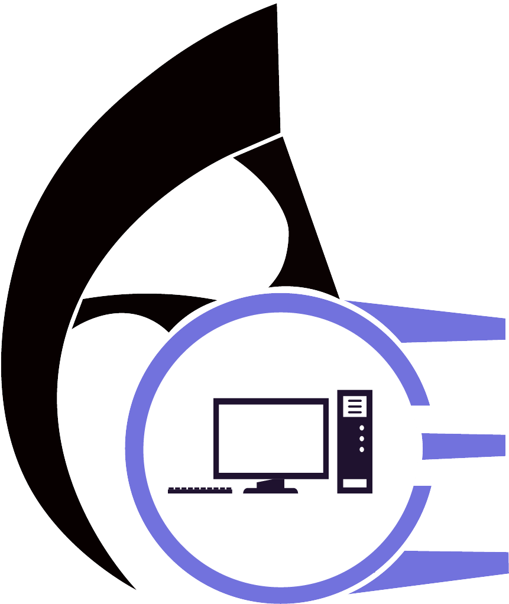
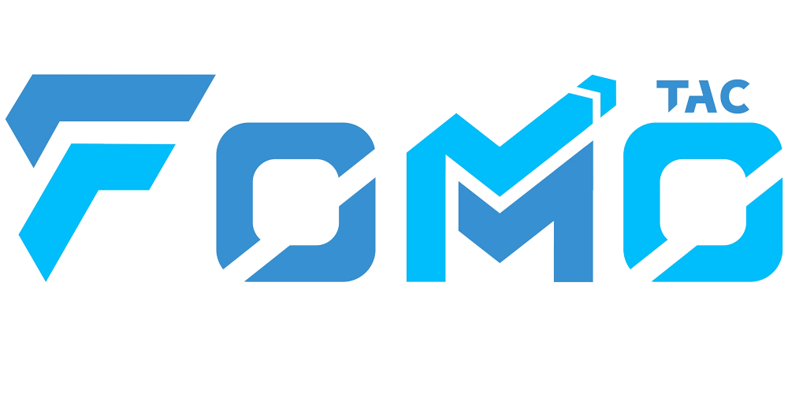
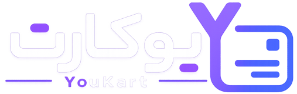
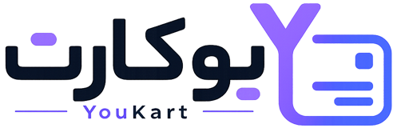

ووردبريس والتطوير المخصص
تصميم المواقع بقوالب جاهزة أو تصاميم مخصصة، وتخصيص الصفحات باستخدام Elementor، وإنشاء إضافات عملية، وصيانة المواقع وتحسين سرعتها وتجربة استخدامها.
أنا طه محمودي خورسند. أمتلك خبرة مهنية تزيد عن أربع سنوات في تصميم مواقع ووردبريس، وتحسين محركات البحث، وإنتاج المحتوى والتسويق الرقمي، إلى جانب تحرير الفيديو والتصميم وتوظيف أتمتة الذكاء الاصطناعي.
مجموعة من العلامات والفرق التي شاركت في مشاريعها التقنية والتصميمية والتسويقية.




أنا مبرمج ومطوّر مواقع أمتلك أكثر من أربع سنوات من الخبرة المهنية في التقنية وتصميم الويب وتطويره. أعمل في تصميم مواقع ووردبريس وتنفيذها، وتحسين أداء المواقع وتهيئتها لمحركات البحث، وإنتاج محتوى متوافق مع السيو، والتسويق الرقمي.
لديّ أيضاً خبرة في استخدام الذكاء الاصطناعي وتصميم أتمتة مدعومة به وتنفيذها، والاستفادة من أدواته لرفع سرعة سير العمل وجودته. وإلى جانب العمل التقني، أعمل في تحرير الفيديو وتصميم الصور والشعارات وتعديلها.
يساعدني الجمع بين المهارات التقنية والإبداع والخبرة العملية على المشاركة في المشروع من الفكرة والتصميم إلى التطوير والتحسين وإنتاج المحتوى والتسليم النهائي. وأسعى باستمرار إلى التعلّم واستخدام التقنيات الحديثة لتقديم حلول عملية ومهنية تركّز على النتائج.
فهم الجمهور، وتصميم تجربة مفيدة، وصناعة محتوى هادف، والتحسين المستمر بناءً على احتياجات كل مشروع.
تطوير المواقع، والسيو، والتسويق الرقمي، وأتمتة الذكاء الاصطناعي، والتعاون مع فرق المحتوى.
تصميم الموقع وصيانته، والدعم البرمجي، والمشاركة في أعمال الأجهزة.
بكالوريوس هندسة الحاسوب، وفقاً للسيرة الذاتية المرفقة.
يتركّز عملي على ووردبريس والتسويق الرقمي والسيو والمحتوى الإبداعي، وأستخدم البرمجة مهارة مساندة لحل مشكلات المشاريع.
تصميم المواقع بقوالب جاهزة أو تصاميم مخصصة، وتخصيص الصفحات باستخدام Elementor، وإنشاء إضافات عملية، وصيانة المواقع وتحسين سرعتها وتجربة استخدامها.
تخطيط تحسين محركات البحث داخلياً وخارجياً، وتحليل الزيارات والنقرات، وتحسين مسارات التحويل، ودعم الحملات الإعلانية، وإنتاج محتوى المقالات والمنتجات بمساعدة الذكاء الاصطناعي والمراجعة البشرية.
تحرير فيديوهات إنستغرام والتعليم والمنتجات والإعلانات، والمساهمة في التصوير الفوتوغرافي والمرئي والتصميم الجرافيكي وإنتاج صور واقعية وإبداعية بأدوات الذكاء الاصطناعي الحديثة.
من خلال خبرة تمتد لعامين في مشاريع إنستغرام، اكتسبت خبرة في ابتكار الأفكار وكتابة السيناريوهات وتخطيط المحتوى وإنتاج الفيديوهات الإعلانية والموشن جرافيك وتحسين تفاعل الجمهور.
ساهمت في مشاريع برمجية متنوعة الأحجام. لديّ معرفة عملية بلغات Python وC# وJavaScript وتقنيات React وNode.js، وأستعين بأدوات الذكاء الاصطناعي في حل المشكلات وتتبع الأخطاء وتحسين التنفيذ.
فهم الجمهور والأهداف والمتطلبات.
تحديد المسار التقني والمحتوى المناسب.
التصميم والإنتاج والتطوير حسب المشروع.
تقييم الأداء والتحسين باستمرار.
نماذج من أعمال تصميم المواقع والسيو والمحتوى والأتمتة وتحسين الأداء؛ اضغط على المشروع للاطّلاع على دوري فيه.
قيادة الفريق التنفيذي لإطلاق المتجر الرقمي، وتطوير الموقع والهوية التجارية واستراتيجية المبيعات وSEO وإدارة إنستغرام. ويشمل إنتاج محتوى الفيديو وهوية إنستغرام.
إدارة استراتيجية SEO وفريق المحتوى والمشاركة في تطوير نظام إدارة محتوى مخصص وتحسين حضور العلامة على إنستغرام. ويشمل إنتاج محتوى الفيديو وهوية إنستغرام.
تطوير مساعد مدرّب على بيانات كل نشاط للرد في المواقع وإنستغرام مع تحويل الحالات المعقدة إلى الدعم البشري.
المساهمة في تطوير الموقع وقيادة تحسين محركات البحث واستراتيجية المحتوى المستهدف.
تطوير الموقع بواسطة ووردبريس والمساهمة في معمارية التطبيق وبرمجة الواجهة الخلفية.
العمل على SEO وتحسين ظهور الصفحات وتصميم العناصر البصرية لمنصة أسعار الصرف.
تصميم وصيانة موقع المتجر والمساعدة في دعم البرمجيات والأجهزة وترقية الحواسيب.
التعاون مع فريق فوموتك في تصميم أجزاء من واجهة المستخدم وعناصر الموقع البصرية.
تطوير الموقع واستراتيجية SEO والمحتوى وأتمتة المهام بالذكاء الاصطناعي مع فرق الإعلام.
تعاون مع شركة الأدوية Mazdisena Sam-Nosh-Daro لتصميم صفحة هبوط إخبارية تعرض الوثائق والأدلة والتغطيات الصحفية لتوضيح أن دواءً جرى توزيعه باسم الشركة لم يكن من إنتاجها.
إضافات بنيتها لتلبية احتياجات فعلية، مع وصف للوظائف ومعرض صور وصفحة مستقلة لكل إضافة.
تطوير مخصص لتتبع حالات الطلبات وتحسين التواصل مع العملاء.
قسم أسئلة شائعة مخصص مع ترميز منظم يدعم فهم المحتوى لمحركات البحث.
مساحة مخصصة لإضافات جديدة وشرحها وعروضها القادمة.
مساحة مخصصة لإضافات جديدة وشرحها وعروضها القادمة.
ملف التنزيل غير منشور بعد.
تواصل بخصوص تصميم مواقع ووردبريس، والسيو، والمحتوى، وإنتاج الفيديو أو التسويق الرقمي.